Top Destinations to Explore
Make sure to add these absolute must-visit locations across the island to your travel list:
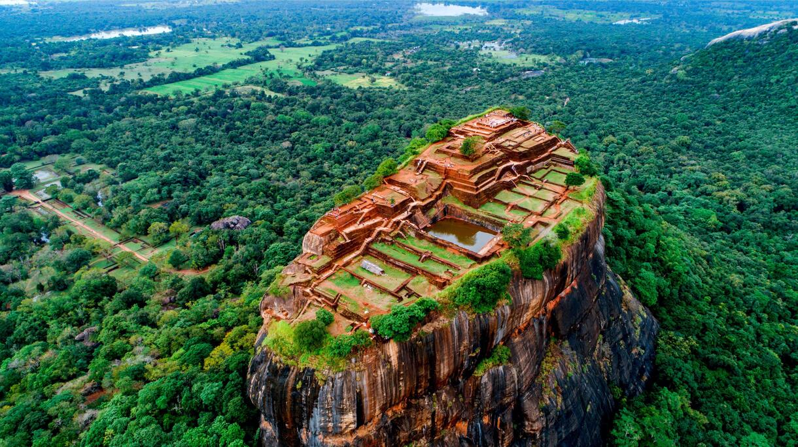
Sigiriya (The Lion Rock)
an ancient palace and fortress complex towering nearly 200 meters above the jungle floor.
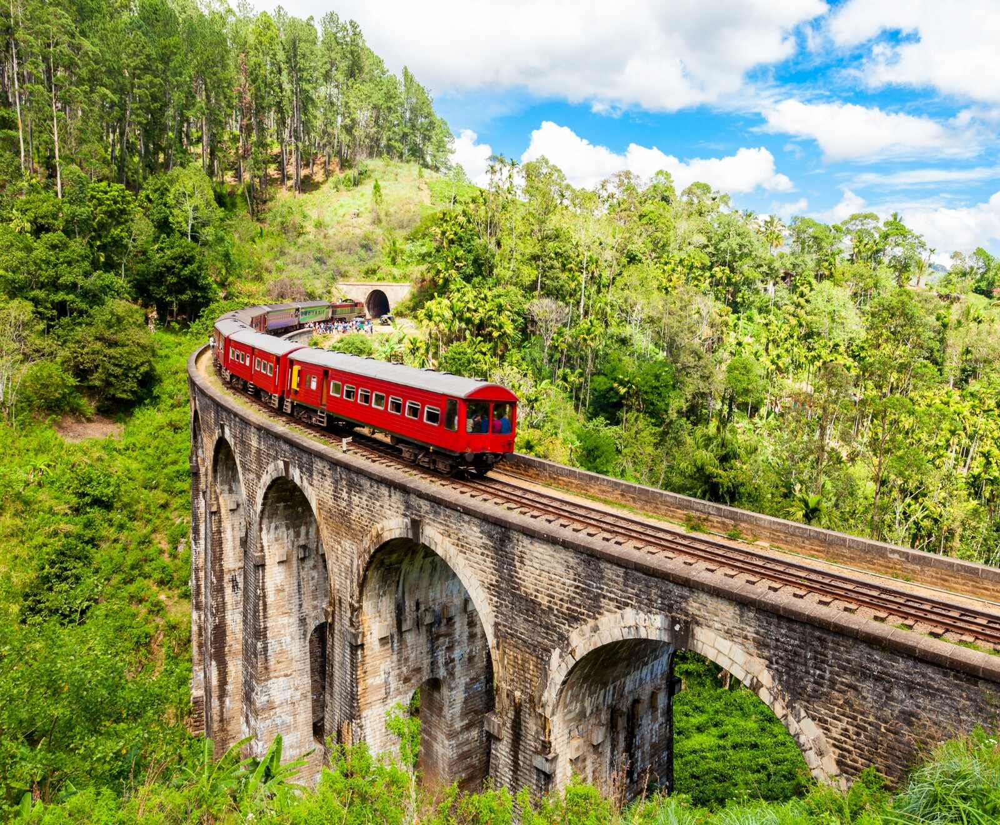
Ella
A small, peaceful hillside village renowned for its scenic green tea plantations and mountain hiking trails.
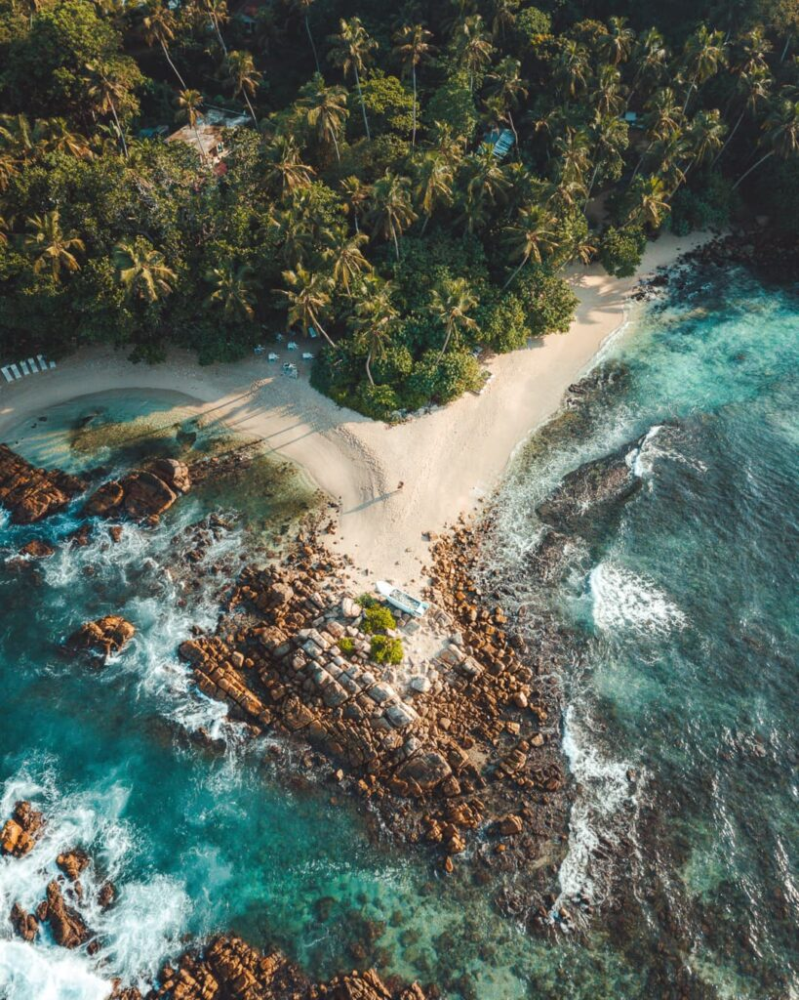
Mirissa Beach
A beautiful coastal town known for its pristine beaches, whale watching opportunities, and vibrant nightlife.
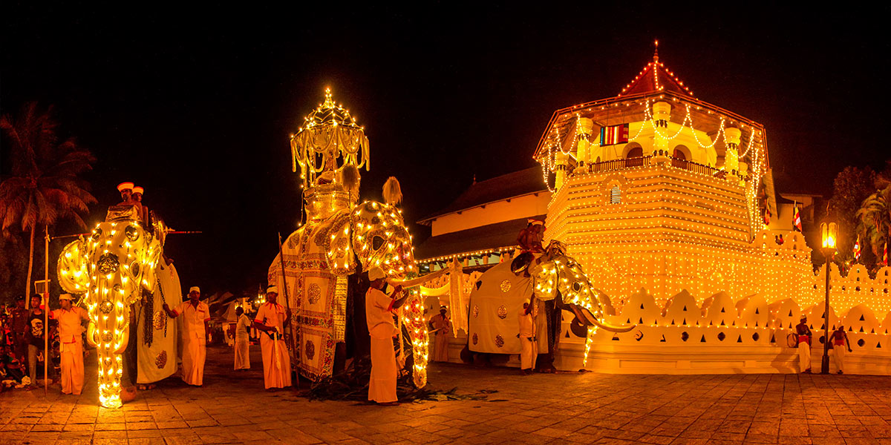
Kandy
The cultural capital of Sri Lanka, known for its rich history, vibrant festivals, and the sacred Temple of the Tooth.
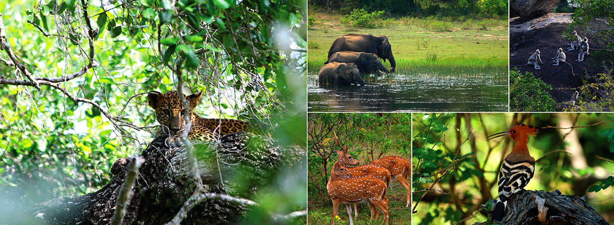
Yala National Park
A wildlife sanctuary famous for its leopard population, diverse bird species, and safari experiences.
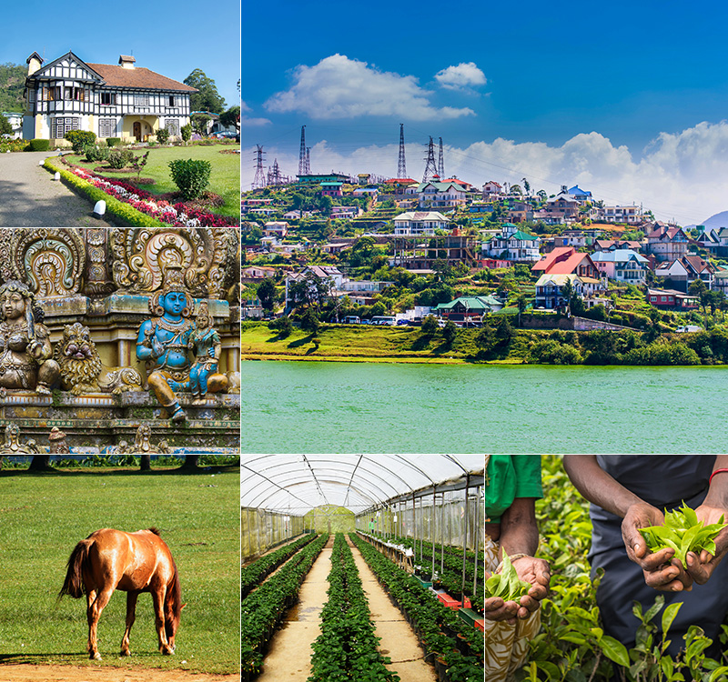
Nuwara Eliya
A picturesque town in the hill country, Often called "Little England", known for its cool climate, tea plantations, and colonial architecture.
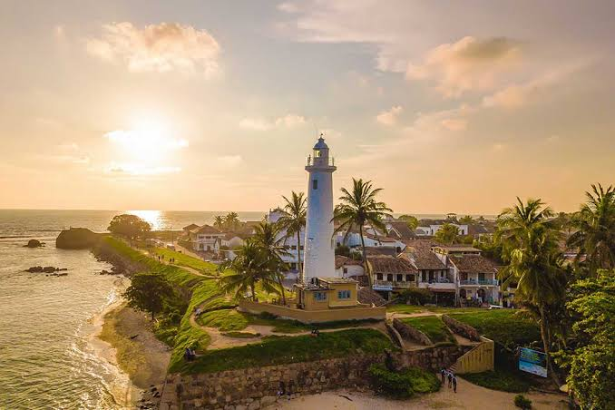
Galle Fort
A historic fort located in the town of Galle, offering panoramic views of the surrounding sea and colonial architecture.
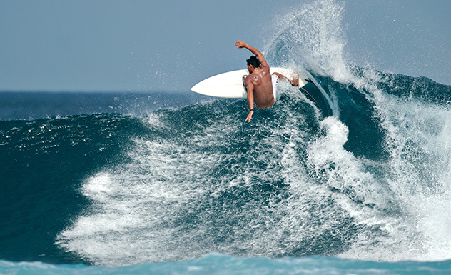
Arugam Bay
A beautiful coastal area known for its pristine beaches, surf breaks, and laid-back atmosphere.
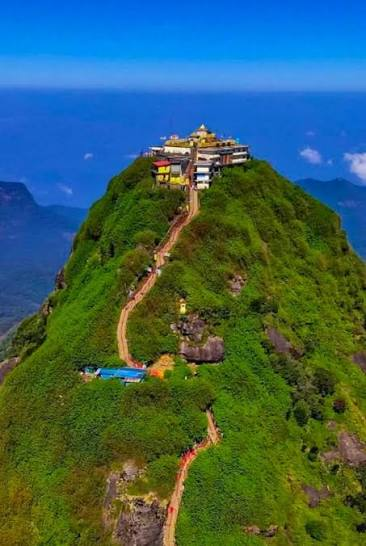
Adam's Peak
Adam's Peak (Sri Pada), a 2,243m (7,359 ft) sacred mountain in central Sri Lanka, is famous for its summit shrine containing the "Sacred Footprint." It attracts pilgrims and hikers who climb over 5,000 steps, primarily via the popular Hatton route, to catch the breathtaking sunrise above the clouds
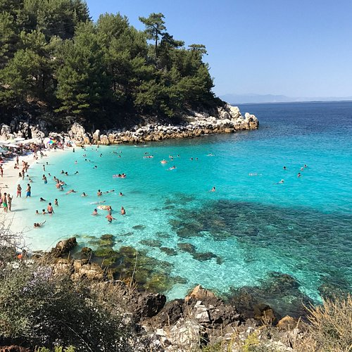
Trincomalee
A charming coastal town known for its beautiful beaches, historic lighthouse, and rich cultural heritage.
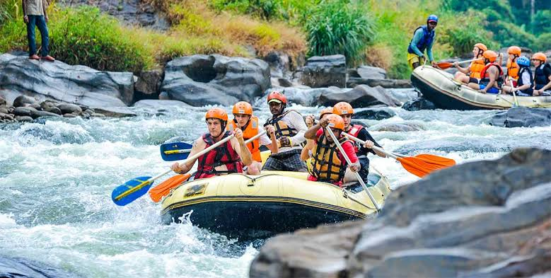
Kithulgala
Nestled amid lush, emerald rainforests and rolling hills along the Kelani River, Kitulgala is Sri Lanka's premier adventure capital. Famous for the Oscar-winning film The Bridge on the River Kwai, it offers thrilling white-water rafting, canyoning, and pristine birdwatching trails.
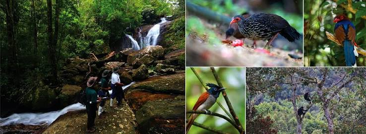
Sinharaja Forest Reserve
A UNESCO World Heritage Site and one of Sri Lanka's most biodiverse regions, known for its dense tropical rainforests and unique wildlife.